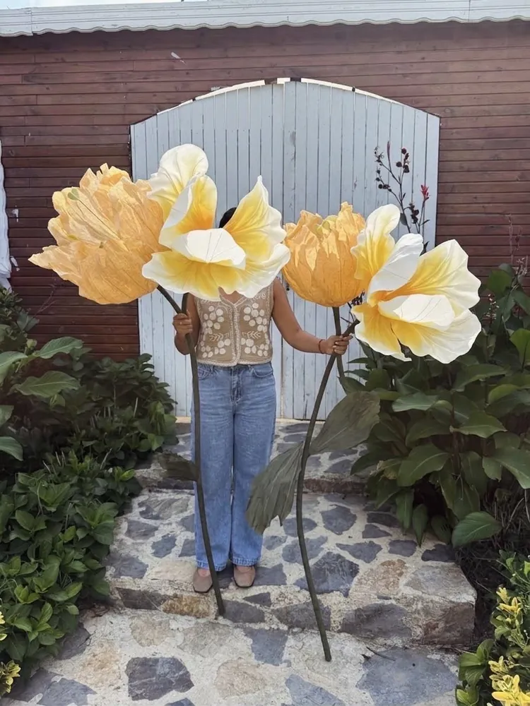

Doğum odası & hastane odası süsleme
Doğum odası süsü dev çiçek aranjmanı.
Hastane odası kapısı için tül ve kreponla elde hazırladığımız dev çiçek aranjmanları. Yeni bir hayatın ilk karşılaması, unutulmaz bir kare olsun.

Neden Eden Floral Art
Kapıda başlayan güzel bir karşılama
- 01
Elde, tül ve kreponla
Her çiçek atölyede tek tek elde hazırlanır; hafif, dolgun ve fotoğrafta çok iyi görünür.
- 02
İstediğiniz renk ve modelde
Odanın, bebeğin ya da ailenin paletine göre renk ve model seçebiliyoruz.
- 03
Dev boyut, güçlü etki
Kapı önünü dolduran, boyu insanı aşan çiçekler; hatıra fotoğrafları için ideal.
- 04
Türkiye geneli kargo
Bulunduğunuz şehre özenle paketlenip gönderilir; kargo süresi en fazla 3–4 gündür (üretim süresi ayrıdır, tasarıma göre 1–3 hafta).
Doğum odası süsü nedir, neden dev çiçek?
Doğum odası süsü, bebeğin dünyaya geldiği hastane odasının kapısını ya da girişini bir karşılama sahnesine çevirmektir. Eden Floral Art'ta bu süsler, tül, krapon ve organzeden tek tek elde şekillendirilen dev çiçek aranjmanlarından oluşur. Çiçekler boyu insanı aşacak büyüklükte hazırlandığı için kapı önünü doldurur; anne, baba ve ziyaretçiler için hem sıcak bir karşılama hem de hatıra fotoğraflarının merkezi olur.
Hastane odası süslemesinde sıkça aranan küçük kapı süslerinden farkı, çiçeklerin gerçekten "dev" ölçekte olmasıdır. Tek bir büyük çiçek ya da birkaç çiçeklik bir kompozisyon, odanın önünde bir sahne etkisi yaratır. İstediğiniz renk ve modelde çalışabildiğimiz için pastel tonlardan canlı turuncu-somon paletlere kadar, odanın ve ailenin temasına uyarlayabiliriz.
Malzeme: tül, krapon ve organze
Çiçeklerimiz taze çiçek değildir; kumaş ve krapon (krepon kağıdı) ile hazırlanır. Bu sayede hafif, dolgun ve fotoğrafta çok iyi görünürler. Aynı çiçek, doğumdan sonra eve taşınıp bebek odasında ya da bir köşede dekor olarak da kullanılabilir.
Krapon (kağıt) çiçekler güneşten etkilenebilir; bu yüzden doğrudan güneş ışığından uzak tutulmalıdır. Tozları hafif nemli bir bezle alınabilir. Tül ve organze gibi diğer kumaşlar güneşten zarar görmez.
Boyutlar ve kompozisyon
Aranjmanlar kapı genişliğine ve hastane koridorundaki yerleşime göre tasarlanır. Tek bir büyük çiçekten, kat kat şakayık ve lilyumdan oluşan bir gruba kadar farklı kompozisyonlar mümkündür. Boyutlar tasarıma göre büyük ölçüde değişir; her çiçek kişiye ve mekâna özel ölçülendirilir. Odanın ölçüsünü, hangi kapıya konacağını ve beğendiğiniz örnekleri bize yazmanız yeterlidir; ölçüleri birlikte netleştiririz.
Kiralama veya satın alma
Doğum odası çiçeklerini satın alabilir ya da kiralayabilirsiniz; ikisi de mümkün. Tercihinizi sipariş sırasında DM'den yazmanız yeterli.
Sipariş nasıl verilir?
- Instagram'dan (@eden.floralart) DM ile renk tercihinizi, doğum tarihinizi ve hastane bilgisini yazın.
- Size özel tasarımı ve fiyatı birlikte netleştirelim.
- Çiçekleriniz atölyede elde hazırlanır; üretim, tasarıma göre 1–3 hafta sürebilir.
- Hazır olunca Türkiye geneline kargoyla gönderilir; kargo süresi en fazla 3–4 gündür (üretim süresi buna dahil değildir), kargo ücreti paketin boyutuna göre değişir. Yerinde kurulum genellikle İstanbul ve İzmir'de yapılabiliyor; diğer şehirlere kargoyla gönderiyoruz.
Ne kadar erken sipariş verilirse o kadar iyi; genellikle 2–3 hafta önceden sipariş verilmesini öneriyoruz. Doğum tarihi tam belli olmadığı için erken yazmanız işinizi kolaylaştırır. Her çiçek elde hazırlandığı için müsaitlik tarihe ve işin büyüklüğüne göre değişir.
Doğum kapı süsü, bebek karşılama süsü ve hastane odası süsleme
Bu üç arama aynı ihtiyacı anlatır: anne ve bebek odaya geldiğinde onları kapıda karşılayan bir süs. "Doğum kapı süsü" denince çoğunlukla kapıya asılan küçük bir çelenk ya da tabela akla gelir. Bizim hazırladığımız ise kapı önünü dolduracak ölçüde tasarlanan dev çiçek aranjmanıdır; hem karşılama sahnesi hem de hatıra fotoğraflarının arka planı olur. Her hastanenin koridor düzeni farklı olduğundan, aranjmanı yerleştirmeden önce hastaneden ya da odadan sorumlu kişiden bilgi almanızı öneririz.
Doğum odası süsü seçerken nelere bakmalı?
Karar vermeden önce şu başlıklara bakmanızı öneririz: kapı genişliği ve koridorda ayrılabilecek alan, odanın ya da bebeğin teması ve renk paleti, doğum tarihinin ne kadar kesin olduğu, çiçeği satın alıp evde de kullanmak mı yoksa kiralamak mı istediğiniz ve teslimatın yerinde kurulumla mı kargoyla mı olacağı. Ayrıntılı bir kontrol listesi için Doğum odası süsü nasıl seçilir? rehberimize bakabilirsiniz.
Zaman çizelgesi: ne zaman sipariş vermeli?
Genellikle 2–3 hafta önceden sipariş verilmesini öneriyoruz. Üretim, tasarıma göre 1–3 hafta sürer; hazır olduktan sonra kargo Türkiye'nin her yerine en fazla 3–4 günde ulaşır. Doğum tarihi tam belli olmadığı için erken yazmak en rahat yoldur; tarih yaklaştıkça müsaitliği birlikte netleştiririz.
Bakım ve saklama
Krapon (kağıt) çiçekler güneşten etkilenebilir, bu yüzden camın önünde ya da doğrudan güneş alan bir yerde bırakmayın; tozunu hafif nemli bir bezle alabilirsiniz. Tül ve organze çiçekler güneşten etkilenmez. Doğumdan sonra çiçeği bebek odasına ya da evdeki bir köşeye taşıyabilirsiniz. Ayrıntılar için Dev kağıt çiçek bakımı rehberimize bakın.
İstanbul, İzmir ve Türkiye geneli
Yerinde kurulum genellikle İstanbul ve İzmir'de yapılabiliyor. Bu iki şehir dışındaki hastaneler için çiçekler özenle paketlenip kargoyla gönderilir; kargo ücreti paketin boyutuna göre değişir. Hastane adınızı, şehrinizi ve tarihinizi DM'de yazarsanız hangi seçeneğin uygun olduğunu birlikte netleştirelim.
Hazır modeller ve diğer hizmetler
Hazır ürünlere göz atmak isterseniz çiçek lambader ve masa lambalarımız Shopier mağazamızda. Doğum odasının dışında nişan, söz ve kına süsleme ile düğün arka fonları, vitrin süsleme ve organizasyon firmalarına özel dev çiçek dekoru çalışmalarımızı da inceleyebilirsiniz; doğum odası aranjmanımızı @zumicoevent için hazırladık.
Örnek işler
Doğum odası ve renk örnekleri



Sıkça sorulanlar
Merak edilenler
Doğum odası süsü için ne kadar önce yazmalıyım?
Ne kadar erken sipariş verilirse o kadar iyi; genellikle 2–3 hafta önceden sipariş verilmesini öneriyoruz. Doğum tarihiniz ve hastane bilginiz netleşir netleşmez yazmanız yeterli; müsaitliği DM'den birlikte netleştirelim.
Siparişim ne zaman hazır olur?
Her parça siparişe özel elde yapıldığı için üretim, tasarıma göre 1–3 hafta sürebilir. Hazır olduktan sonra Türkiye'nin her yerine kargoyla en fazla 3–4 günde ulaşır; kargo ücreti paketin boyutuna göre değişir. Yerinde kurulum genellikle İstanbul ve İzmir'de yapılabiliyor.
Renk ve model seçebilir miyim?
Evet. İstenilen renk ve modelde çalışabiliyoruz. Odanın ya da bebeğin temasını yazmanız yeterli.
Türkiye geneline gönderim yapıyor musunuz?
Evet, Türkiye'nin her yerine gönderim yapıyoruz. Her parça siparişe özel elde yapıldığı için üretim, tasarıma göre 1–3 hafta sürebilir; hazır olduktan sonra kargoyla Türkiye'nin her yerine en fazla 3–4 günde ulaşır. Kargo ücreti paketin boyutuna göre değişir. Yerinde kurulum genellikle İstanbul ve İzmir'de yapılabiliyor; diğer şehirlere kargoyla gönderiyoruz.
Çiçekleri satın alabilir miyim, kiralayabilir miyim?
İkisi de mümkün: çiçekler satın alınabilir ya da kiralanabilir.
Çiçeklerin boyutu ne kadar?
Boyutlar tasarıma göre büyük ölçüde değişir; her çiçek kişiye ve mekâna özel ölçülendirilir.
Fiyatlar nasıl belirleniyor?
Fiyat; çiçeğin boyutuna, adedine, rengine ve tasarımın kapsamına göre değişir. Fikrinizi DM'den yazın, size özel fiyat verelim.
Doğum kapı süsü ile dev çiçek aranjmanı arasındaki fark nedir?
Doğum kapı süsü çoğunlukla kapıya asılan küçük bir süstür. Dev çiçek aranjmanı ise kapı önünü dolduracak ölçüde, tül, krapon ve organzeden elde hazırlanan büyük bir kompozisyondur. Boyutlar tasarıma göre değişir; her çiçek kişiye ve mekâna özel ölçülendirilir.
İstanbul ve İzmir'de hastane odasına kurulum yapıyor musunuz?
Yerinde kurulum genellikle İstanbul ve İzmir'de yapılabiliyor. Hastane adınızı ve tarihinizi DM'den yazın, kurulumun mümkün olup olmadığını birlikte netleştirelim. Diğer şehirlere kargoyla gönderiyoruz.
Doğum odası çiçekleri güneşten etkilenir mi, nasıl temizlenir?
Krapon (kağıt) çiçekler güneşten etkilenebilir; doğrudan güneş ışığından uzak tutulmalıdır. Tozları hafif nemli bir bezle alınabilir. Tül ve organze çiçekler güneşten etkilenmez.
Bebek karşılama süsünü doğumdan sonra evde kullanabilir miyim?
Evet. Çiçekler taze olmadığı için doğumdan sonra bebek odasında ya da evdeki bir köşede dekor olarak da kullanılabilir. Çiçeği satın aldıysanız size kalır; kiralama yaptıysanız kiralama koşullarını sipariş sırasında birlikte konuşuruz.
Doğum tarihi kesin değilse siparişi nasıl planlamalıyım?
Doğum tarihi tam belli olmadığı için erken yazmanız işinizi kolaylaştırır; genellikle 2–3 hafta önceden sipariş verilmesini öneriyoruz. Müsaitlik tarihe ve işin büyüklüğüne göre değiştiği için tahmini tarihinizi DM'den yazın, birlikte plan çıkaralım.
Başlayalım
Yeni gelen için dev bir hoş geldin.
Diğer hizmetler: Nişan & düğünVitrin tasarımıOrganizasyon firmaları